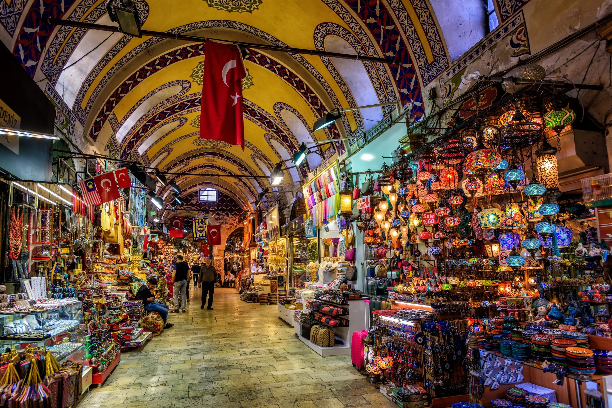

Food & Drink
See the complete [Places Index] for all restaurants with maps.
Essential Street Food
- Simit — sesame-crusted bread ring, sold everywhere. ~5 TRY.
- Balık ekmek — grilled fish sandwich on the boats by Galata Bridge. Iconic.
- Midye dolma — stuffed mussels from street carts. Ask for lemon. Eat immediately.
- Kokoreç — spiced offal sandwich. Not for everyone. Very good if you like it.
- Chestnuts / corn — roasted on braziers in winter, found at major squares.
- Döner — sliced rotisserie meat in bread or pide. Ubiquitous.
- Künefe — warm cheese pastry soaked in syrup. Best hot.
- Boza — fermented millet drink, thick and slightly sour. Winter specialty. Try at Vefa Bozacısı [map] (since 1876).
Sit-Down
- Meze — order a spread of small dishes at a meyhane (tavern). Best with rakı.
- Kebab — adana, urfa, or beyti for lamb. Iskender (Bursa-style) if you want cream+tomato.
- Pide — Turkish flatbread pizza, best at dedicated pide restaurants.
- Lahmacun — thin crispy meat-topped flatbread, usually eaten rolled with greens.
Baklava
- Karaköy Güllüoğlu (Karaköy) [map] — the definitive spot. Order at the counter, eat standing. No debate.
Meyhanes (Traditional Taverns)
Go for an evening: order meze to start, fish or meat main, rakı throughout. Not fast — it's a ritual.
- Ali Haydar [*] (Samatya) [map] — neighborhood spot, authentic, non-touristy.
- Refik [*] (Beyoğlu, Asmalımescit) [map] — old-school atmosphere, excellent meze.
- Safa [*] (Yedikule) [map] — local favorite, very traditional.
Breakfast
Turkish breakfast (kahvaltı) is an event: cheeses, olives, eggs, tomatoes, cucumbers,
honey, clotted cream (kaymak), jams, simit. Good spots: Van Kahvaltı Evi (Cihangir),
Brekka (Karaköy), anywhere in Kadıköy market area.
- Cafe Privato [*] (Beyoğlu) [map] — Mom recommends for breakfast. Turkish spread.
- Mesopotamian Terrace Restaurant [*] (Sultanahmet) [map] — Breakfast with a view.
Drink
- Çay — black tea in tulip glasses. Everywhere. Free refills at most lokanta.
- Türk kahvesi — Turkish coffee. Thick, unfiltered, served with water. Drink slowly.
- Ayran — salted yogurt drink, pairs well with kebab.
- Rakı — anise spirit, mixed with water. Turns milky white. Meyhane standard.
Where to Eat by Neighborhood
Sultanahmet — tourist-heavy, but some good spots in the backstreets.
- Tarihi Sultanahmet Köftecisi [map] — famous for meatballs, been here since 1920. Locals go too.
- Hafız Mustafa (since 1864) [map] — historic sweets shop. Baklava, Turkish delight, lokum.
- Doyum [map] — straightforward kebabs, popular with locals.
Beyoğlu / Asmalımescit — trendy restaurants, rooftop bars, good evening scene.
- Mikla [map] — Turkish-Scandinavian fine dining, stunning views from The Marmara roof.
- 360 Istanbul [map] — rooftop, panoramic views, cocktails. More for the view than the food.
- Nevizade Sokak [map] — packed meyhane row. Go around 8pm, expect to stay 3 hours.
Karaköy — third-wave coffee, gourmet delis, baklava.
- Karaköy Güllüoğlu — see above.
- Namli Gurme [map] — gourmet deli, charcuterie, excellent sandwiches.
- Karaköy Lokantası [map] — upscale Turkish, good lunch.
Eminönü — street food central by the water.
- Balık ekmek boats right on the waterfront. Egyptian Bazaar for spices.

Grand Bazaar — 4,000+ shops under one roof since 1461
- Pandeli [map] — Ottoman cuisine above the Spice Bazaar entrance. Historic, slightly touristy.
- Hamdi Restaurant [map] — kebabs with Eminönü views from the roof.
Kadıköy (Asian side) — the local food scene. Worth the ferry.
- Çiya Sofrası [map] — Anatolian regional cuisine from across Turkey. Genuinely exceptional.
- Kadıköy Market (Moda backstreets) — produce, street food, fish.
- Third-wave coffee and casual restaurants throughout Moda.
Bosphorus villages — good for seafood with a view.
- Bebek Balıkçısı [map] — Bebek seafood, Bosphorus-side terrace.
- Ortaköy — kumpir (loaded baked potato) stands by the mosque. Tourist but worth it.
Princes' Islands
No cars on the islands = ice cream and fish. Elastic Maraş-style ice cream at every stand.
Seafront fish restaurants in Büyükada.
Food Vocab
- Meze — appetizers/starters
- Rakı — aniseed spirit (national drink)
- Kahvaltı — breakfast
- Çay — tea
- Lokanta — casual neighborhood restaurant
- Meyhane — traditional tavern
- Kaymak — clotted cream (breakfast standard)